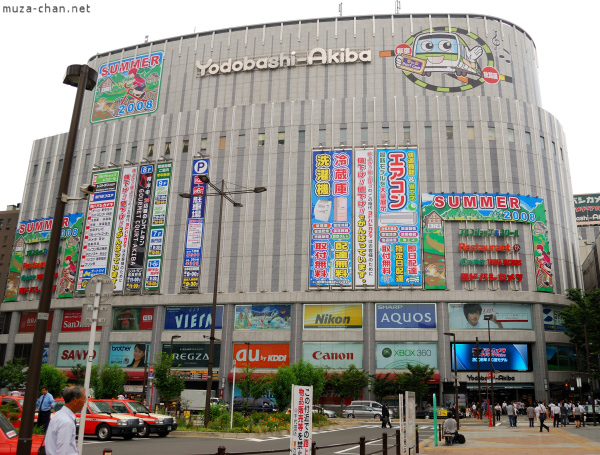
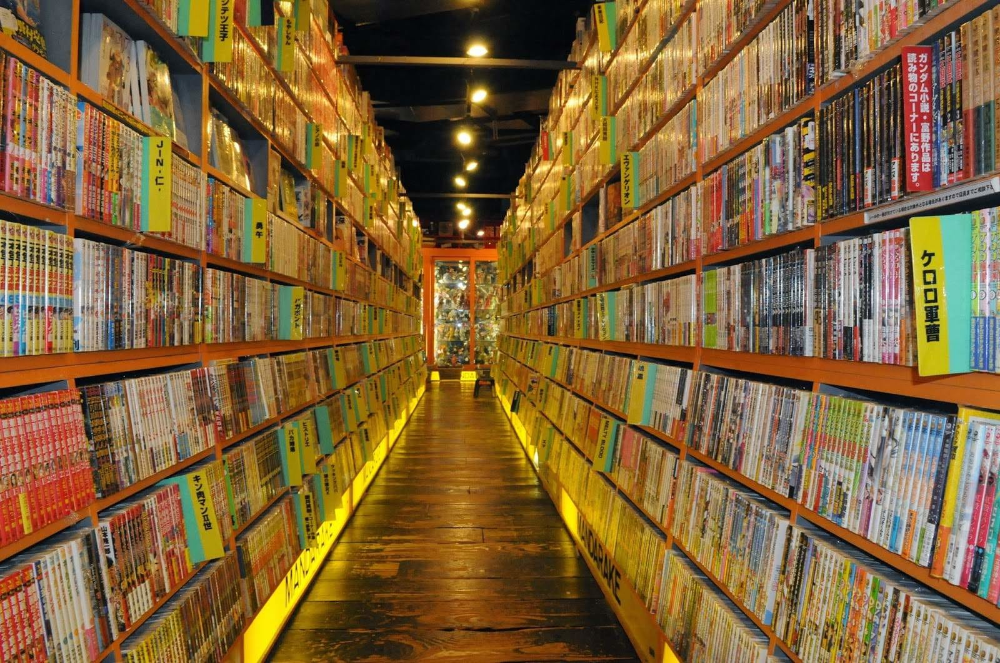

Akihabara (také nazývána Akiba) je městská část v centru Tokya, která je především známa díky velkému množství obchodu s elektronikou. V poslední letech se stala uznávaným centrem japonské „otaku“ kultury a mnoho obchodů věnující se anime a manze jsou rozeseté po celé Akihabaře. Akihibara prošla řadou rozsáhlých rekonstrukcí, včetně renovace a rozšíření stanice Akihabara a výstavbě nových budov. Mezi těmito nově otevřenými budovami byl obrovský obchod s elektronikou Yodobashi a Akihabara Crossfield. Obrovský komplex s cílem propagovat Akihabaru jako centrum pro celosvětovou elektronickou technologii a obchod.
Yodobashi Camera

Jeden z nejlepších obchodů s elektronikou v Japonsku, kde koupíte i to nejnovější zboží. Jedná se o devíti poschoďoví obchodní dům, kde můžete nalézt nejširší výběr elektroniky. Můžete zde strávit klidně i 2 – 3 hodiny. Yodobashi se nachází v přední části stanice Akihabara.
Maid Cafe (Maid kavárny)
Maid Cafe je jedna z nejbizarnějších věcí Akihabary v Tokiu. Maid Cafe je místo, kde mladé děvčata servírují hostům v roztomilých maid kostýmech (oblek služebné) a nazývají vás "mistrem" (goshujin-sama). Nejvíce kaváren se nachází právě v oblasti Akihabary. Je to jedna z neznámnějších atrakcí v Tokiu.
Mandarake

Mandarake je nazýván největší obchod s mangou a anime na světě. Zabývá se použitými předměty souvisejícími s mangou, anime, hrami, PVC postaviček a spoustu vzácných či sběratelských předmětů, které s největší pravděpodobností najdete jenom v Mandaraku.